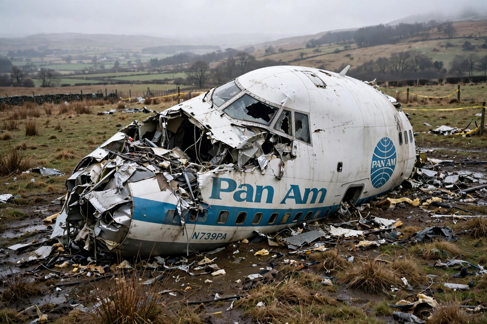

Lockerbie bombing
From Wikipedia, the free encyclopedia

The Lockerbie bombing was the destruction of Pan Am Flight 103 by a bomb on 21 December 1988, killing all 259 people on board and 11 residents of the Scottish town of Lockerbie — 270 victims in total. The deadliest terrorist attack in British history, it was attributed to Libyan intelligence; the Libyan agent Abdelbaset al-Megrahi was convicted in 2001 by a Scottish court sitting in the Netherlands. Libya accepted responsibility in 2003 and paid compensation, though the conviction remains contested.
The attack
The Boeing 747 Clipper Maid of the Seas, flying Frankfurt–London–New York, was destroyed at 31,000 feet by some 300–450 grams of Semtex concealed in a Toshiba radio-cassette player inside a suitcase that had travelled from Malta via Frankfurt. Wreckage fell over 2,000 km²; the town of Lockerbie, where the wings and fuel created a crater and fireball killing 11 people, gave the atrocity its name.
Investigation and trial
A joint Scottish–FBI investigation traced clothing fragments in the debris to a Maltese shopkeeper's sale to a Libyan man, and timer fragments to a Swiss firm supplying Libya. After years of sanctions, Libya surrendered Megrahi and Lamin Khalifah Fhimah in 1999; at Camp Zeist (2000–01) Fhimah was acquitted and Megrahi convicted. Released on compassionate grounds with terminal cancer in 2009 — to American outrage — he died in Libya in 2012, maintaining innocence; a US indictment of a further suspect, Abu Agila Masud, led to his transfer to US custody in 2022.
Aftermath
Libya's 2003 letter 'accepting responsibility for the actions of its officials', US$2.7 billion in compensation and abandonment of WMD programmes normalised its relations with the West until 2011. Families' groups remain divided between those accepting the verdict and those — including some British relatives — who regard Megrahi as wrongly convicted and the official account incomplete.